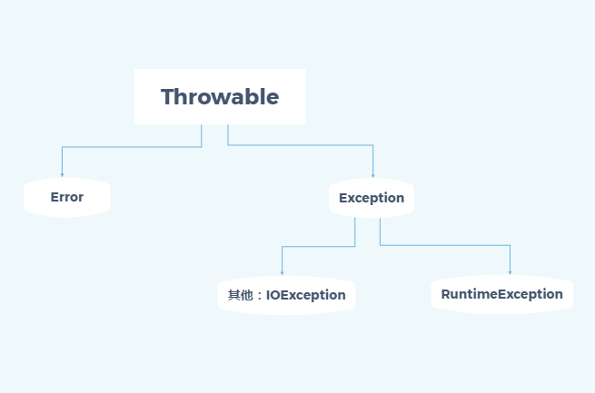

Java 异常机制
如何处理java程序中发生的异常
异常分类
java中所有的异常对象都派生于Throwable类。

以上是异常的层次结构
非受查异常（unchecked)
Error:系统内部错误或者资源耗尽错误
RuntimeException:代码出现错误 例如
- 错误的类转换
- 数组越界
- 空指针
受查异常（checked)
其他：IOException:不是代码问题，可能是环境问题 例如：
- FileNotFoundException
声明受查异常
例如
public FileInputStream(String name) throws FileNotFoundException
这样抛出一个FileNotFoundException对象，这样构造器就不会初始化新的FileInputStream对象，系统会自动搜索异常处理器，以便知道如何处理这个异常对象。
什么情况下抛出异常？
- 调用一个抛出受查异常的方法，例如FileNotFoundException
- 程序发生错误，利用throw抛出一个受查异常
- 程序出现错误，例如数组下表越界
- Java虚拟机运行时出现内部错误
前两种情况必须告诉调用方法的程序员可能抛出异常，如果调用者处理不当没有捕获，则会导致线程结束运行。
并不是所有的异常都需要声明
例如RuntimeException、Error这些非受查异常就不必声明，因为这些异常是可以通过修改代码避免、或者无法控制，所以声明这些异常对我们没有意义，没有必要去说明发生这些异常发生的可能性。
如何抛出异常
- 找到合适的异常类
- 创建这个异常类的对象
- 将对象抛出
创建异常类
很多时候已经有的异常类并不能满足我们的业务需求，不能很好描述异常问题，这时我们要创建一个自己的异常类。这个异常类只要派生于Exception类或者更加具体的子类，而且定义的类默认应该有两个构造器，一个是默认构造器，另一个则是带有详细异常信息的构造器。
捕获异常
我们知道，当发生异常的时候，如果这个异常没有在任何地方被捕获，则会导致程序终止，并在控制台上打印出异常类的信息，包括异常类的类型和堆栈内容。
如果我们业务场景不允许抛出这个异常，我们则要捕获它，一般我们会用try/catch语句块。
如果在try中发生异常，则会在catch块中说明异常信息。
1.程序将不会执行try中剩余的代码。
2.程序继续执行catch中的处理代码。
如果这个抛出的异常没有在catch中声明，则程序马上会终止进行。
以下是一个经典的try/catch的使用。如果不存在这个文件，则会打印出异常信息和栈轨迹
try {
FileInputStream fileInputStream = new FileInputStream("C:\\Users\\NPC\\Desktop\\url.txt");
byte[] buffer = new byte[64];
BufferedInputStream bufferedInputStream = new BufferedInputStream(fileInputStream);
bufferedInputStream.read(buffer);
} catch (FileNotFoundException e) {
e.printStackTrace();
}
通常应该捕获那些知道怎么处理的异常，而那些不知道怎么处理的异常继续进行传递。
不允许在子类throws说明符中出现超过超类方法列出的异常类范围
try语句块中可以捕获多个异常，并对不同类型的异常做出不同的处理
try{
code...
}catch(FileNotFountException e){
missing file
}catch(IOException e){
I/O problem
}
finally
回收资源
finally中的代码无论try中是否抛出异常都会被执行
- finally中 return 返回值 会覆盖try中的返回值
带资源的try
finally中如果可能会抛出异常，这样finally中的异常将会覆盖try中的异常，原始的异常将会丢失
所以finally中也要对异常进行捕获，但是这样代码就会变得极其繁琐，所以可以使用带有资源的try语句（try-with-resources) 资源实现了AutoClosed接口
try(Resources re = ...){
code...
}
这样try块退出时，res.close()可自行调用；如果res也抛出异常，原始异常会重新抛出，close异常则会被抑制。
异常机制技巧
- 只有在异常情况下才是用异常机制，不能用来做判断。try/catch本身很损耗性能
- 不要过分细化异常
- 利用异常层次结构，用子类异常或者自定义异常代替普通异常，便于诊断
- 不要压制异常
- 检测错误是，苛刻比放任好 try early
- 不要羞于传递异常 catch later
Referenc
Java核心技术